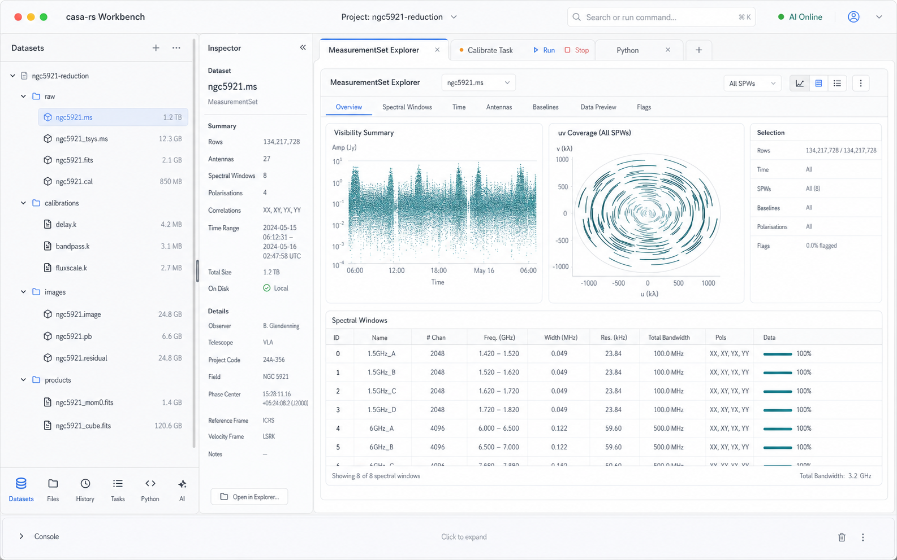
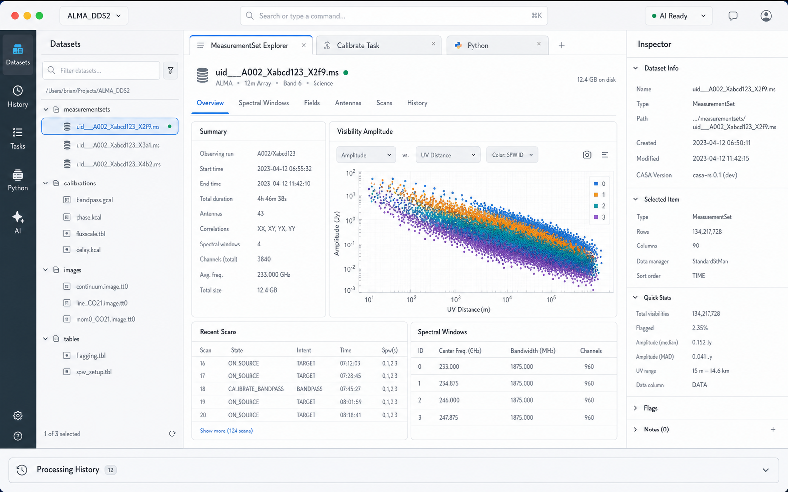
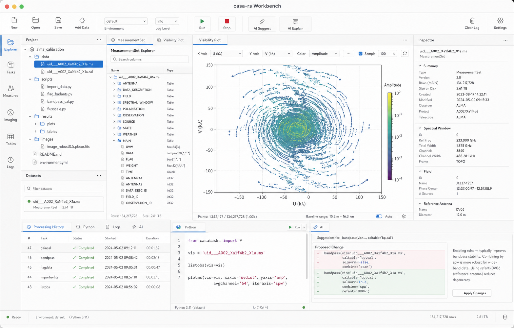

Mac-Native GUI Mockups¶
Truth class: proposed visual agreement Last reality check: 2026-05-03 Verification: image-generation draft
This document captures visual mockups for the mac-native casa-rs workbench.
It is a companion to mac-native-gui-spec.md, not a
replacement for the product and architecture spec.
The goal is to agree on approximate organization before implementation hardens the UI. These mockups are intentionally allowed to lead backend work: visual fixtures may show desired panels, states, and interactions before the canonical provider protocols exist.
Visual Principles¶
- Native macOS workbench, not a web app in a wrapper.
casa-rsproduct identity; CASA/casacore language appears only for interoperability or evidence.- Screen real estate is precious. Avoid showing every major panel at once.
- The left dock contains one active navigation panel at a time, such as datasets, files/project view, or processing history.
- Small mode icons at the bottom of the left dock switch what replaces the active navigation panel.
- The tab
+belongs to the central workspace tab strip. It opens a new central work tab; it does not switch left-dock modes. - Full explorers and task panels live in central tabs.
- AI chat is a first-class central tab. Inline AI suggestions and task diffs are supporting surfaces, not a replacement for chat.
- Lightweight inspector sits immediately to the right of the active left-dock navigation panel and is completely collapsible.
- Bottom panels such as logs or Python should be collapsed or short by default.
- Inspector stays fast, selection-scoped, read-mostly, and cache-backed.
- Explorers can be large, stateful, and feature-rich.
- AI suggestions are visible as proposals or diffs, not silent mutation.
- Fixture/demo states must be visibly labeled once implemented.
- Opening or creating projects is normal macOS menu behavior, not large always-visible chrome. Users normally open a project directory.
Run/Stopcontrols belong to the header of an individual task tab, not the global application toolbar.
Overall Workbench¶
V3 Current Direction¶

Decisions Captured¶
- The left side is a dock, not a separate global activity rail plus a sidebar.
- The dock shows one navigation source at a time:
Datasets, file/project view, or Processing History. - Bottom icons in the dock switch the active navigation source.
- The inspector is adjacent to the active navigation source, not on the far right of the whole window.
- The inspector is fully collapsible.
- The central workspace uses tabs aggressively for explorers, task panels, Python, and other work surfaces.
- The central tab
+opens a new work tab; it is distinct from left-dock mode switching. - Task
Run/Stopcontrols remain task-tab-local.
Open Visual Questions¶
- Should the inspector collapse to a thin vertical handle, a split-view button, or disappear entirely until reopened from the dataset selection?
- Should bottom dock icons be icon-only with tooltips, or include tiny labels?
- Should Processing History usually replace
Datasetsin the left dock, or open as a central tab when the timeline needs more width? - Should the file/project view and dataset view be separate left-dock modes, or should the dataset view be a semantic grouping inside the file/project mode?
Decision Log¶
2026-05-04: AI Chat Is A First-Class Work Tab¶
Decision:
- The app has an AI chat terminal/tab, not only inline suggestions.
- AI suggestions can still appear as proposed diffs in task panels.
- The AI chat tab is a central workspace tab and can reference selected datasets, task tabs, Python output, and processing history.
Rationale:
- Users need a conversational workspace for exploration, planning, and follow-up questions, not only point actions.
Status: accepted for mockups
Supersedes: inline-suggestions-only interpretation
2026-05-04: GUI Work Uses GUI-Wave Names¶
Decision:
- GUI planning and implementation issues should use names such as
GUI-Wave-1,GUI-Wave-2, and so on. - Do not use plain
Wave 1,Wave 2, etc. for GUI work.
Rationale:
- The repo already has tutorial-parity work using numbered waves, including active Wave 6 work. GUI issue names must stay distinct on the project board.
Status: accepted for planning
2026-05-04: Testability Is A First-Class UI Requirement¶
Decision:
- The clickable GUI prototype must include headless model tests and runtime state introspection from the beginning.
- The UI should be built around explicit state and actions rather than screenshot-only manual verification.
Rationale:
- Retrofitting debug and test hooks into a GUI after it grows is expensive and usually leaves the app hard to maintain.
Status: accepted for planning
V2 Superseded Direction¶

V2 moved in the right direction by reducing always-visible surfaces and using
central tabs, but its far-left icon rail and central tab + made the mode
model confusing.
Decisions Captured¶
- Use a compact activity bar to choose what appears in the left panel.
- Show exactly one left-side content panel at a time; the example uses
Datasets. - Use central tabs aggressively for explorers, task panels, and Python.
- Treat task execution as tab-local:
RunandStopappear in a task tab header, not in the global toolbar. - Keep the global toolbar minimal: project identity, command/search, AI status, and other app-level controls.
- Keep Processing History as a switchable panel or central tab rather than a permanently visible bottom panel.
- Keep the right inspector lightweight and optional.
Decisions Superseded¶
- Do not use a separate far-left activity rail if bottom dock icons can switch left navigation modes more clearly.
- Do not place the inspector on the far right as a general app inspector by default; keep it adjacent to the dataset/navigation context.
V1 Overloaded Direction¶

V1 is retained as a rejected/overloaded iteration. It showed too many major surfaces at once and overused persistent panels.
Decisions Rejected¶
- Do not show project, datasets, processing history, Python, and AI all as active always-visible panels.
- Do not put
Run/Stopin the global toolbar. - Do not expose
New/Openas large persistent window chrome. - Do not make the bottom panel large by default.
Panel Mockup Queue¶
Generate and iterate these panel-specific mockups after the overall layout is accepted:
- Project explorer and dataset finder.
- Lightweight inspector.
- MeasurementSet explorer.
- Task panel with AI parameter diff.
- Processing History / provenance timeline.
- Dual-ported Python and matplotlib panel.
- AI chat terminal and Oracle assistant panel.
- Image explorer with cube slice or movie controls.